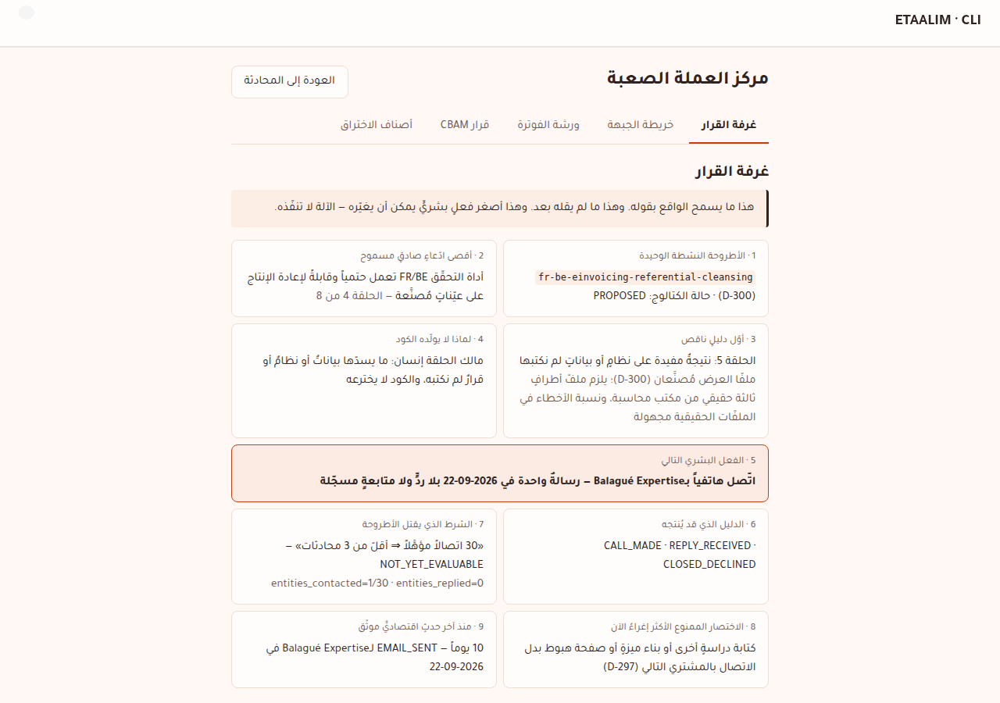

What the repository may truthfully say about the active hard-currency thesis today, the first proof it is missing, the one human act most likely to supply it, and what was built, tested and run live to keep those three answers honest.
Every statement the rest of this report relies on, typed before any design. "Expiry" names the event that would make the line false, not a clock.
| Statement | Type | Evidence | What it proves | What it cannot prove | Expiry | Owner |
|---|---|---|---|---|---|---|
| One active thesis: FR/BE e-invoicing reference-data cleansing, delivered manually; everything else frozen | Law | .memory/decisions.md D-300 | What work is permitted | That the thesis will sell | Owner amends D-300 | Owner |
| The admin hard-currency surface is admin-only, no customer portal, no LLM in numbers, no persistence, no automatic ledger change | Law | D-305; router require_roles(ADMIN_ROLE) | The boundary the chamber was built inside | That the boundary is sufficient | Owner amends D-305/D-314 | Owner |
| France: e-invoice reception mandatory for all VAT firms from 2026-09-01; issuance for SMEs from 2027-09-01 | Fact | service-public A18802; D-300 | A dated legal pressure exists | That firms will pay a third party | Calendar change by law | Legislator |
| Fine of 50 € per invoice not issued electronically, capped at 15,000 €/year; not being able to receive costs 500 €, then 1,000 €, after formal notice (LF 2026 art. 123) | Fact | service-public A18802 (verified this session) | The size of the stick, per obligation | That fines are enforced in practice | New finance law | Legislator |
| Belgium: Peppol B2B mandatory since 2026-01-01; fines 1,500 / 3,000 / 5,000 € | Hypothesis | Secondary sources only (vendor and advisory sites); D-304 already notes no primary source | That a deadline is widely reported | The exact fine schedule | A primary text is read | Owner |
| Contact ledger has one row: an email to Balagué Expertise on 2026-09-22; no reply; the planned 2026-09-24 phone follow-up was not made | Measured event | CONTACT_LEDGER.csv:2 | One outbound contact happened | That the email was read | A later row for this entity | Owner |
| GATE_C = ABSENT; settled revenue 0 €; reply rate 0/1; quote and payment rates have no denominator | Measured event | HARD_CURRENCY_SCORECARD.json (derived, sha-checked) | No money has moved | That money cannot move | A PAYMENT_SETTLED row | Owner |
| The FR/BE checker runs deterministically and reproducibly on fabricated samples | Fact | tools/hard_currency_engine/ + tests; value-chain link 4 | Engineering capability | Usefulness on a real client file | A failing test | Code |
| Error rate in real third-party files | Unknown | Link 5 is NOT_REACHED with that reason | Nothing yet | Any rate claim | Three real files measured | Buyer |
| 25 hard-currency paths: 0 commercial evidence, 1 validated, 7 engineering, 12 research assets, 5 unevidenced; next actor is human on 23 | Repo-claim | VALUE_CHAIN.json, derived and gated by check_value_chain | Where each path stands on its own declared evidence | That declared evidence is sufficient (human review) | A ledger row or a link change | Owner |
| Price: 290 € HT up to 200 records, in EUR via Malt or SWIFT | Hypothesis | D-304 (owner decision, PRICING HYPOTHESIS) | The one price to quote | That anyone will pay it | Five quotes with no deposit (K3) | Owner |
| EUR collection path works (bank, Malt, foreign-currency account) | Unknown | No record type exists in the repository | Nothing | Any readiness to invoice | A written bank answer is recorded | Owner + bank |
| ANAE registration done; DPA template legally reviewed | Unknown | No record type exists | Nothing | Legality of the first invoice | A recorded card / review | Owner |
| "A file ready to import with zero routing rejection" (catalog outcome wording) | Prohibited claim | OFFER_CATALOG.json offer_outcome_ar, flagged by the chamber | That the catalog contradicts its own claims_forbidden_ar | Anything about results | Owner rewords it | Owner |
| "Our service cuts rejections by X%", "nos clients…", "garanti" | Prohibited claim | D-304 rules, now buyer_claims.py | — | — | Measured real-file results and paid customers | Owner |
| The Decision Chamber works end to end: 25/25 API and 22/22 browser checks on a local full stack with real model keys | Measured event | scripts/e2e/hard_currency_center_live.py, …_ui.cjs; docs/evidence/d306-*.png | The software behaves as specified | Production deployment; any demand | A later failing run | Code |
| The production admin password must be rotated (the reason was given to the owner privately and is not written in the repository); registration has no password-length rule | Fact | Owner's message; app/api/schemas/security.py | A live security weakness | That it has been exploited | Password changed and policy added | Owner |
require_roles(ADMIN_ROLE); the two POSTs rate-limited.written: false; the owner commits ledger rows through git.shared; a test forbids network and shell modules by name.customer_messages/admin_messages, live.main already uses D-306 for the vibe-coding constitution), an extension of D-305 at the owner's request.The request carried live credentials: an OpenRouter key, a Honcho key, a Tavily key, the Supabase database URL with its password, and two account passwords. They were used only as process environment for the local run and appear in no file, commit, log or screenshot. Rotate all of them, since they now sit in a chat transcript. Rotate the production admin password as well. Registration accepts any password length; that is a finding, not changed here because the platform is frozen.
The bottleneck is channel: contact volume. It is not technical. The chain to money is contact → reply → real file → useful result (link 5) → buyer decision → quote → deposit → settled payment, and it breaks first at the reply. One reply cannot happen without contacts, and the repository recorded one contact while it produced 17 different "first opportunities", 12 status appendices and 6 decision rounds (D-297's own count, 2026-08-16 to 2026-09-28).
The sharpest finding is about falsifiability, not revenue. D-300 says the thesis dies if 30 qualified contacts yield fewer than 3 conversations. At the measured pace, that test cannot even be run for about three and a half years. The thesis is currently neither alive nor dead; it is untested. Code cannot change that. Twenty-nine more contacts can, in weeks.
Two secondary bottlenecks wait behind the first: payment readiness (bank, ANAE, Malt) is unknown because nothing records it, and data access needs a DPA a firm will sign. Neither blocks the next contact, because the sample is free.
Four layers, each mapped onto code that already existed. Nothing in it invents a ladder: the ceiling comes from the eight value-chain links, the settlement view from the ledger's closed action set, readiness from the catalog.
flowchart LR A[VALUE_CHAIN.json] --> S B[CONTACT_LEDGER.csv] --> S C[OFFER_CATALOG.json] --> S D[Scorecard] --> S S["build_snapshot
reality layer"] --> R["build_brief
one action or none"] R --> T["render_sentences
FACT HYPOTHESIS UNKNOWN ACTION REFUSAL"] T --> V{"sentence_problems"} V -- any problem --> X["503: the chamber refuses"] V -- clean --> Y["Decision Chamber
admin only"] Y --> H(("Owner acts
and commits a ledger row")) H --> B
| Layer | Code | What it may do | What it may never do |
|---|---|---|---|
| 1 · Deterministic reality | shared/research/economic_truth.py | Derive the ceiling, claims, kill-condition progress, contradictions, blind spots, evidence register | Call a model, read the clock, write, turn null into zero |
| 2 · Causal decision | shared/research/economic_decision.py | Name the bottleneck; pick one action by a declared lexicographic rule; refuse when no lawful act exists | Invent scores; act; pick an unlawful action |
| 3 · Human authority | git + CONTACT_LEDGER.csv | Contact, record, commit, change readiness, kill or keep the thesis | Be bypassed: the API has no write path |
| 4 · Language | render_sentences + sentence_problems | Speak templated sentences, each classified and tied to evidence ids | Emit a FACT without evidence; mention money or legal readiness without evidence of that kind |
Plus two contract changes: contact_ledger.parse_ledger now rejects impossible transitions for every reader, and the D-304 buyer-text rules have one home in tools/hard_currency_engine/buyer_claims.py.
| Field | Meaning | Today |
|---|---|---|
thesis | Active thesis id, its decision, catalog status, its paths with derived reach | OPP-01, OPP-02 at link 4 · PROPOSED |
ceiling | Highest claim backed by contiguous links, its classification and evidence ids | "The FR/BE checker runs deterministically on fabricated samples" · link 4 |
first_missing_proof | First unreached link, its reason from the chain, its actor, why code cannot produce it | Link 5 · human · real third-party file needed |
claims[] | 15 claims: requires, external actor, disconfirming evidence, forbidden shortcut, decision affected, expiry, status | 4 supported · 8 not supported · 3 unknown |
kill_conditions[] | D-300 conditions quoted verbatim (a test checks the quote), status FIRED / HOLDING / NOT_YET_EVALUABLE / NOT_RECORDABLE | K1 1/30 not yet evaluable · K4 not recordable |
funnel, entities[] | Counts and per-entity history from thesis-routed ledger rows | 1 contact · 1 entity |
contradictions[] | Stale scorecard, value-chain problems, catalog wording that fails the buyer-claim rules | 1: "zero routing rejection" |
blind_spots[] | Unrouted paths, unobservable settlement states, unrecorded claims | 8 |
missing_denominators[] | Scorecard metrics that are null, with their basis | Margin, retention, cycle time… |
last_event, days_since_last_event | Delta since the last verified economic event | EMAIL_SENT · 10 days |
evidence[] | Every id a sentence may cite: path, existence on disk, what it proves, what it cannot | 19 items, all present |
DECISION_AVAILABLE or NO_LAWFUL_DECISION_AVAILABLE (unreadable ledger, or a kill condition fired: continuing is then the owner's written decision)Today: bottleneck channel; action FOLLOW_UP_CALL: phone Balagué Expertise (one email on 2026-09-22, no reply, no follow-up recorded), after checking the target's marketing-opposition flag; may produce CALL_MADE, REPLY_RECEIVED or CLOSED_DECLINED. After a recorded call, the brief moves to NEXT_CONTACT (verified by the preview and by a test).
The admin's Hard-Currency Center now opens on the chamber, before any map or workbench. It does not ask how it can help. Its first screen holds nine lines:
Then four doors and no free chat: Inspect the evidence, Challenge the conclusion, Prepare the next human action, Record a confirmed outcome. The last door validates a proposed row and shows the delta; it writes nothing.

A closed set of four questions; an open question returns 422. These are the answers the live system gave today.
| Question | Answer, from the repository's evidence |
|---|---|
| Are we ready? | Ready for what: DISCOVERY needs link 7 (a reply), missing. OFFER_READY needs links 6 and 7, missing. PILOT, PAID_PROOF, REPEATABLE need link 8, missing. Catalog status is PROPOSED. Sayable now: the checker runs deterministically on fabricated samples. Not sayable: a real-file result, a buyer decision, interest, money, repeat customers, a known error rate, profitability. |
| What should we build? | No. Code is not the bottleneck; the next link on every thesis path belongs to a human. Building now adds capability above a human gap. Smallest no-code experiment: the follow-up call. |
| Why are we not making money? | Contact recorded: yes. Reply: no. Sample on a real file: no. Link 5: no. Collection path: unknown, no record. ANAE: unknown, no record. Quote: no. Money: no. The chain breaks first at the reply. |
| Can we say this to a buyer? | Five verdicts from lexical rules: FORBIDDEN, UNSUPPORTED, HYPOTHESIS ONLY, SAFE WITH QUALIFICATION, FACTUALLY SAFE. "Nous garantissons zéro rejet de routage" → FORBIDDEN, live. Unrecognised text is UNSUPPORTED: the linter's silence is not approval. |
The reactor emits only capsules tied to an action in the fixed table, so it cannot generate free "insights". The first capsule is live in the chamber; the other two are what the same table produces at the next stages.
Run as a structured review of this build by one agent, not as a swarm of agents: the repository's own law puts a single-agent baseline first (D-272) and forbids wiring models to tools before M1→M4 (D-187). Dissent that was not resolved is kept as dissent.
| Member | Objection | Disposition | Open dissent |
|---|---|---|---|
| Evidence Prosecutor | The ceiling rests on fabricated samples. | The ceiling says exactly that; link 5 is shown as missing. | — |
| Causal Skeptic | One unanswered email has many explanations: spam folder, wrong person, tax season. | The call is framed as a hypothesis with a falsification test; K1 stays not evaluable until 30. | A single call is weak evidence either way. |
| Margin Destroyer | 290 € may lose money after platform fees, support and rework. | Margin is NOT_SUPPORTED; recording the first job's hours is a table action. | Even a paid job does not prove viability. |
| Buyer Adversary | Why would a French firm hand client identifiers to a supplier outside the EU? | DPA step before any file; DPA review shown as unknown. | International transfer rules (GDPR chapter V) are not addressed by the DPA template alone. |
| Privacy Sentinel | The preview and the buyer-text check receive entity names and free text. | Not stored; the log line carries only the action and the verdict; no model sees it. | — |
| Legal Boundary Keeper | The 50 € fine could be quoted against reception. | Verified at the primary source; a rule now flags 50 € next to reception. | Belgian figures remain secondary-sourced. |
| Delivery Scientist | The buyer sees a cleaned file and a report, not a chamber. | The D-305 workbench produces those; the chamber points at the act that gets a file. | — |
| Falsification Officer | At the current pace K1 cannot be judged for years. | Made the headline finding (§3). | — |
| Historical Archivist | Do the new transition rules rewrite history? | No row was changed; the one real row passes; the sent Balagué email stays verbatim (D-304). | — |
| Decision Chair | One reversible act, given all dissent. | The follow-up call, recorded as a ledger row. | — |
A view over the ledger's closed action set, not a new ladder. States without a ledger action are declared unobservable. Every state's authority is the owner, who records the row; the system validates and never records.
| State | Observed by | Required proof | Reversible | Permitted claim | Forbidden claim |
|---|---|---|---|---|---|
| Target | named-targets file | a named row | yes | a named firm is targeted | that it is interested |
| Contacted | EMAIL_SENT · CALL_MADE · LINKEDIN_SENT · FORM_SUBMITTED | ledger row | no | we reached out | that it was read |
| Replied | REPLY_RECEIVED (needs an earlier contact) | ledger row | no | they answered | that they will pay |
| Discovery | unobservable | — | — | — | any claim |
| Sample requested | unobservable | — | — | — | any claim |
| Sample delivered | SAMPLE_DELIVERED (needs a reply) | ledger row | no | we delivered a sample | that it was useful |
| Buyer decision | value-chain link 6 | declared link with evidence | yes | a decision tied to a result | a decision without an independent result |
| Proposal | QUOTE_SENT (needs a reply; amount required) | ledger row | no | we proposed a price | that it was accepted |
| Deposit | DEPOSIT_RECEIVED (needs a quote; amount and evidence required) | ledger row + receipt | no | money moved | that delivery was accepted |
| Delivery accepted | unobservable | — | — | — | any claim |
| Invoice | unobservable | — | — | — | counting an invoice as money |
| Payment settled | PAYMENT_SETTLED (needs a quote; bank statement required) | ledger row + statement | no | a settled payment (GATE_C) | repeatability or margin |
| Repeat payment | derived: two settled payments, same entity | two rows | no | a customer paid twice | retention |
| Retained customer | derived: two billing periods | scorecard | no | retained | before two periods |
Enforced in parse_ledger, ordered by date then line, per entity: a reply needs an earlier outbound contact; a sample or a quote needs a reply; a deposit or a payment needs a quote; a closure needs a contact. Eight cases were red before the change.
Qualitative levels, not a product of unmeasured numbers. The threshold is a rule: anything with external reach or write authority over money, law, readiness or the ledger is outside the machine.
| Capability | Data sensitivity | Authority | External reach | Irreversible | Audit | Verdict |
|---|---|---|---|---|---|---|
| Read value chain, ledger, catalog, scorecard | low | read | none | no | git | allowed |
| Compute snapshot, brief, sentences | low | compute | none | no | tests + live runs | allowed |
| Classify a buyer sentence typed by the owner | medium (prospect names) | compute, not stored | none | no | verdict only in log | allowed |
| Validate a proposed ledger row | medium | compute, no write | none | no | git commit by owner | allowed |
| Audit a client file (D-305 workbench) | high | in memory, not stored | none | no | request log | allowed (existing) |
| Write a ledger row | medium | write commercial truth | none | yes | — | human only |
| Change catalog readiness or GATE_C | low | write | none | yes | — | human only |
| Send an email, place a call, submit a form | medium | act | external | yes | — | forbidden |
| Send the snapshot to a hosted LLM for narration | medium | compute | third party | no | would need logging | owner decision |
| Read the production database | high | read | production | no | connector log | not in the machine (the agent did one read-only check) |
Primary or official sources, each checked this session. They shape mechanisms and controls; none is used as a commercial claim.
| Source | Primary claim | Mechanism borrowed | Does not prove | Application risk | Layer |
|---|---|---|---|---|---|
| Pearl, Causal inference in statistics: an overview, Statistics Surveys 3 (2009) | Causal claims rest on stated assumptions; associations do not answer intervention questions | The brief names its assumptions; the ordered stage table is an explicit causal model of the chain | That the stage order is the true causal order for this market | A wrong stage order picks the wrong action | 2 |
| Kohavi et al., Controlled experiments on the web, DMKD 18 (2009) | Randomised controlled experiments establish causal effects of changes | Each action is a falsification test with success and failure observed in the ledger | That n = 1 calls give a causal effect | Tiny samples; the capsule says so | 2 |
| Greenblatt et al., AI Control, ICML 2024 | Safety protocols should hold even if the model is adversarial | Validator outside the generator; the chamber refuses on any failed sentence | That a lexical validator stops a capable adversary | Paraphrase evades lexical rules | 4 |
| NIST AI RMF 1.0 (AI 100-1, 2023) | Govern, Map, Measure, Manage; human oversight across the lifecycle | Human authority layer; unknowns reported as unknown | Compliance with any law | Voluntary framework, read as guidance | 3 |
| EU AI Act, Art. 14, Reg. 2024/1689 | High-risk systems need human oversight able to monitor, override and halt | Design reference: no autonomous action; the owner can ignore every recommendation | That this admin tool is high-risk (it is not in Annex III) | Over-claiming conformity | 3 |
| OWASP Top 10 for LLM Apps 2025, LLM06 Excessive Agency | Least privilege; human approval for writes and transactions | No write path; capability budget | That a future LLM layer is safe | Scope creep when an LLM is added | 3, 4 |
| W3C PROV-DM (Recommendation, 2013) | Provenance as entities, activities and agents | Every sentence cites evidence ids with paths and existence | That the cited evidence is true | Ids can cite stale files; existence is checked, truth is reviewed | 1 |
| Torres-Arias et al., in-toto, USENIX Security 2019 | Verify each step of a supply chain end to end | Ledger transitions: each step must be preceded by its prerequisite | Cryptographic integrity (the ledger is plain git) | A forged row still parses | 1 |
| Parasuraman & Riley, Humans and automation, Human Factors 39 (1997) | Misuse: over-reliance on automation; disuse after false alarms | One action, its rationale and its rejected alternatives are shown, to invite challenge | That the owner will not over-trust the chamber | Automation bias toward the suggested call | 3 |
| GDPR Art. 28, Reg. 2016/679 | Processing on behalf of a controller needs a written processor contract | DPA before any real file; nothing stored | Lawful international transfer | Chapter V transfer rules for a non-EU processor | 1, 3 |
| French administration notice A18802 (LF 2026 art. 123) | 50 €/invoice (cap 15,000 €) for non-issuance; 500 € then 1,000 € for not being able to receive | A sourced rule flags the 50 € fine next to reception | Enforcement intensity | Figures change with each finance law | 4 |
| Secondary Belgian Peppol mandate (vendor and advisory summaries) | Mandatory since 2026-01-01; 1,500 / 3,000 / 5,000 € fines | None; kept as hypothesis | The legal text | Quoting unverified fines to a buyer | — |
Each case names its enforcer. Where none exists, the row says so.
| # | Failure | What happens now | Enforcer |
|---|---|---|---|
| 1 | A payment row with no quote to that entity | Ledger rejected | test_contact_ledger::test_impossible_transitions_are_rejected |
| 2 | A reply with no earlier contact | Rejected | same |
| 3 | A quote to firm A licenses a payment from firm B | Rejected | test_transitions_are_checked_per_entity |
| 4 | A reply dated before the email | Rejected (date, then line order) | test_impossible_transitions_are_rejected |
| 5 | Closing a file never opened | Rejected | same |
| 6 | A future-dated row recorded as an event | Rejected | existing row_problems test |
| 7 | Money with no bank evidence reference | Rejected | existing ledger test |
| 8 | A FACT sentence with no evidence id | Validator rejects | test_sentences_that_outrun_their_evidence_are_rejected |
| 9 | A FACT citing an id that does not exist | Rejected | same |
| 10 | Money or customer wording backed only by chain evidence | Rejected | same |
| 11 | "Legal" or "ready" wording backed only by ledger evidence | Rejected | same |
| 12 | "مالك" (owner) mistaken for "مال" (money) | Passes correctly | test_owner_is_not_money |
| 13 | A forbidden superlative inside a hypothesis | Rejected | validator test |
| 14 | The chamber renders a sentence that fails validation | 503 refusal with the reason | Code path in decision_chamber._guard; no dedicated test of the refusal branch |
| 15 | A kill condition judged before its denominator | NOT_YET_EVALUABLE | test_kill_conditions_below_their_denominator_say_so |
| 16 | K1 fires and the machine still suggests an action | NO_LAWFUL_DECISION_AVAILABLE | test_a_fired_kill_condition_refuses_to_decide |
| 17 | A quote unpaid after 14 days | K5 fires | test_a_quote_unpaid_after_14_days_fires_k5 |
| 18 | An unreadable ledger | No decision, problems listed | test_an_unreadable_ledger_refuses_to_decide |
| 19 | A paid quote while the collection path is unknown | SEND_QUOTE not lawful | test_no_paid_quote_while_the_collection_path_is_unknown |
| 20 | Kill thresholds drift from D-300's text | Test fails | test_active_thesis_and_kill_conditions_are_quoted_from_d300 |
| 21 | The snapshot depends on the clock or call order | Equal on repeat | test_snapshot_is_deterministic_and_reads_no_clock |
| 22 | The core imports a network, shell or model client | Test fails | test_the_machine_imports_nothing_but_stdlib_and_shared |
| 23 | A student calls a chamber route | 403 | API test + live run |
| 24 | The preview writes to the ledger or the message tables | Bytes and counts unchanged | API test + live run |
| 25 | An open question to the chamber | 422 | API test + live run |
| 26 | A guarantee or "zero rejection" in buyer text | FORBIDDEN | test_d304_shapes_are_caught; catalog test |
| 27 | The 50 € fine quoted against reception | UNSUPPORTED (found and fixed this session) | test_the_50_euro_fine_is_not_tied_to_reception |
| 28 | A promise wrapped in "Si …" read as a possibility | FORBIDDEN (found and fixed this session) | test_an_absolute_outcome_is_forbidden_even_behind_an_if |
| 29 | A promise phrased with none of the trigger words, or a conditional that is still misleading | Possibly SAFE WITH QUALIFICATION | No automated enforcer: lexical limit, human review |
| 30 | The owner acts but never commits the row, or the bank answers but nothing records it | The chamber keeps recommending the old act | No automated enforcer: the ledger is only as current as the owner keeps it |
shared/research/contact_ledger.py.tools/hard_currency_engine/buyer_claims.py: the D-304 rules plus absolute outcomes and penalty scope.shared/research/economic_truth.py and economic_decision.py.app/services/hard_currency/decision_chamber.py; routes /chamber, /chamber/cross-examination, /chamber/outcome-preview.DecisionChamber.jsx, the center's first tab.ccr-26d6a543-rhd0a5, pushed; 33 files; no pull request opened.tests/shared and tests/unit/tools suites green.| Capability | Decision needed | Proof before switching on |
|---|---|---|
| LLM interpreter for the chamber | Amend D-305/D-314; choose model and data policy | Every output passes sentence_problems; output discarded on any failure; adversarial paraphrase set |
| Ledger actions for discovery, sample request, delivery acceptance, invoice | Change the closed action set | Transition rules extended with red tests; scorecard derivation unchanged for old rows |
| Activation-gate record (bank, ANAE, Malt, DPA review) | Choose where the record lives and who signs it | Evidence path required per item; then SEND_QUOTE can become lawful |
| Belgian ledger route (OPP-02) | Declare a targets file for Belgium | Value-chain gate green with the route |
| Catalog outcome wording | Owner rewords "zero routing rejection" | The chamber's contradiction disappears |
| Password policy and admin rotation | A security change on the frozen platform | Registration rejects short passwords; rotation done outside the repo |
| Any automated outreach | Not recommended; D-187 lock | M1→M4 complete first |
Each law names the observation that would refute it. "Economic" laws are about this market and are refuted by ledger rows. "Invariant" laws are about the machine and are refuted by a counterexample run.
| # | Law | Refuted if |
|---|---|---|
| 1 | Economic Contact volume, not code, bounds time to first payment for this thesis. | A reply arrives after a code change with no new outbound row. |
| 2 | Economic A follow-up call to an emailed firm yields more replies per contact than a new cold email. | Over at least 10 of each, follow-up calls reply at or below first emails. |
| 3 | Economic At least 3 of 30 qualified contacts reply (D-300 K1). | 30 contacts recorded with fewer than 3 replies. The thesis then dies. |
| 4 | Economic At least 1 of 10 replying firms requests a quote (K2). | 10 replies, zero quotes. |
| 5 | Economic At least 1 of 5 quotes at 290 € produces money (K3). | 5 quotes, zero deposits or payments. |
| 6 | Economic A firm that replies will share a real file under a DPA. | Fewer than 1 in 3 replying firms sends a file. |
| 7 | Economic Real third-party files contain errors the firm's own software misses. | The first three real files show no anomaly beyond those already flagged by the firm. |
| 8 | Economic EUR can be received for this exported service. | The bank declines in writing with no alternative (K4). |
| 9 | Economic A first quote is paid within 14 days (K5). | Fifteen days pass after the first quote with no settled payment. |
| 10 | Economic One job at 290 € covers its delivery hours. | The first job's recorded hours exceed what 290 € buys at the catalog's own published day-rate anchors. |
| 11 | Economic The issuance deadline (2027-09-01) raises the reply rate. | The 60 days before it show no higher reply rate than 60 comparable days in 2026. |
| 12 | Invariant No claim rises above a gap in the chain. | A path classifies above its first missing link. |
| 13 | Invariant GATE_C moves only with a settled payment row. | GATE_C changes while the ledger has no PAYMENT_SETTLED. |
| 14 | Invariant The same ledger and date give the same next action. | Two snapshots of identical inputs differ. |
| 15 | Invariant The chamber never speaks a FACT it cannot cite. | Any rendered FACT without evidence reaches the screen. |
The system is not intelligent because it speaks fluently. It is intelligent when it refuses to claim more than reality supports, identifies the next question reality must answer, and makes the cost of self-deception visible.